Nationwide Insurance
Annual Census Review for Retirement Plans
Redesigning the annual census review to accommodate more data, improve usability, and update styling.
Timeframe
Nov 2017 – Feb 2019
Product Type
Enterprise web
Desktop
Team
Business Leads
Impact Manager
Tech Lead (Architect)
Developers, SMEs
Requirements Analyst
Visual Designer
My Role
- User Researcher
- Information Architect
- Interaction Designer
- UX Designer
What is the Census Review?
The Census Review is an annual audit of retirement plan participant data
At the end of the year, employers (plan sponsors) and Nationwide administrators review the participant data, fix issues, and send the data for required compliance and non-discrimination testing.
Mistakes in this data could result in penalties or a plan becoming disqualified, which would be unfortunate for the employee! This review process prevents financial and legal repercussions from inaccurate census and payroll information.
My Goal
Redesign the annual review to accommodate more data, improve usability, and update styling.
Users
Multiple administrative roles complete different parts of this review
- Employers of companies that sponsor retirement plans for their employees.
- Department managers of these companies.
- Associates and administrators from Nationwide that manage the retirement plans.
To understand this landscape, I researched the domain and discussed individual user needs with stakeholders during cross-functional requirements gathering meetings. Many included users of this process and support reps that work with plan sponsors.
What Data is Included?
Census and employment info, hours, and compensation
This data is used to identify plan participants and determine enrollment statuses, vested balances for participant accounts, and more.
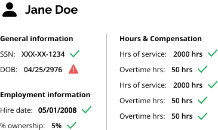
Current State
The current workflow is confusing and cumbersome
Issues include lack of clear guidance, options, and visibility of errors. Our team aimed to completely revamp the existing experience, improve areas of confusion, add more useful information, and update styling.
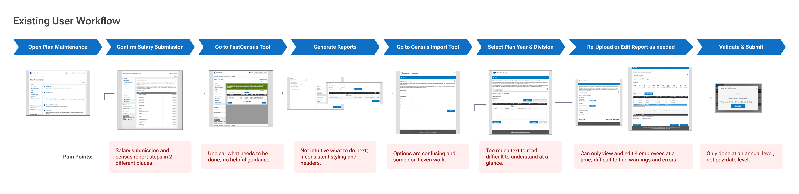
New Requirements
Adding pay date-level data increased flexibility, but also complexity
In order to reduce errors in the long term and allow for greater flexibility in how employers choose to review and submit their data, the business decided to add pay date level data to this process.
With up to 52 pay dates in a year (e.g. weekly pay), the amount of data we needed to incorporate in the design was multiplied by up to 52 times.
We conducted several additional meetings to sort through these requirements.
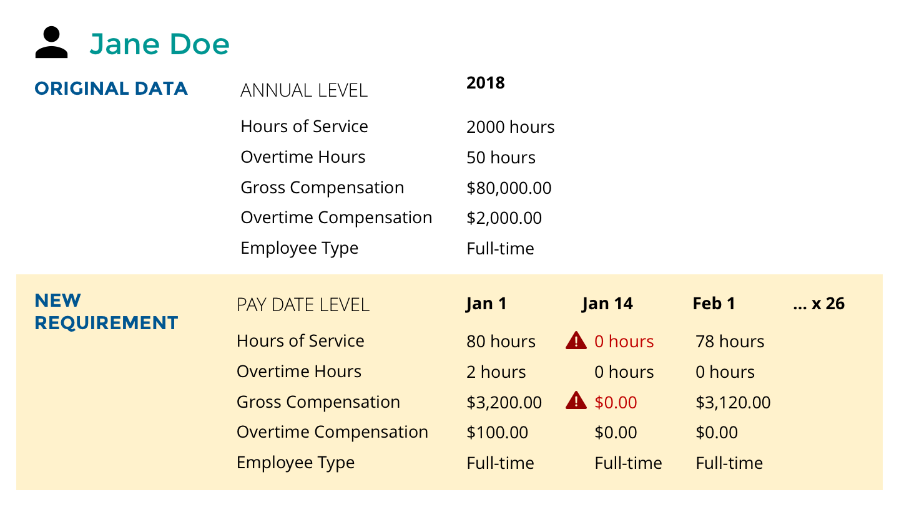
Design
Accommodating multiple settings, options, and rules
To make sense of all this complexity, I created a diagram of all the different paths and scenarios. This was very helpful in getting everyone on the same page and allowing them to see where all the pieces of the puzzle fell. Feature numbers and related requirements such as notifications and reports allowed stakeholders to easily reference their requirements documents.
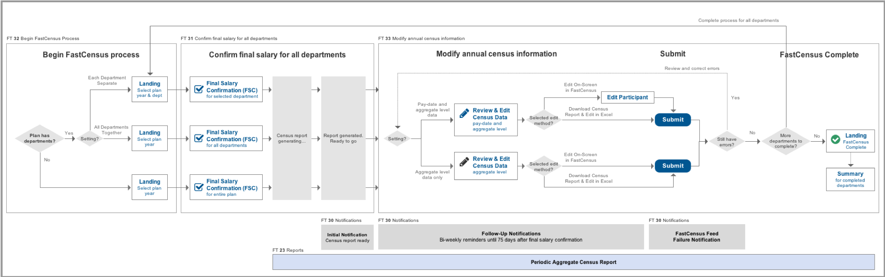
Iteration 1
I then started the tedious process of mapping out the actual interaction flow. Challenging nuances arose such as determining what to do in the middle of the process, when the user needs to wait overnight for the report to generate before proceeding to the next step.
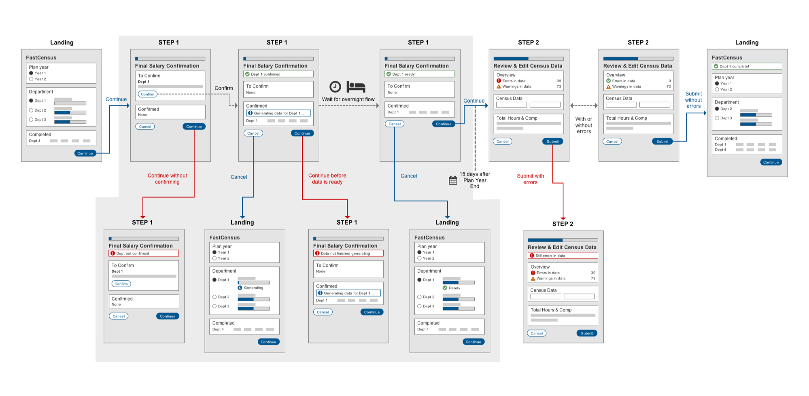
User Testing & Iteration
Usability issues and balancing conflicting views and needs
I conducted user tests with 6 users in various roles to determine what worked or didn't work with the initial design. Through these tests and subsequent team discussions, various usability issues and conflicts were revealed.
Administrators vs. support reps
While the administrators and internal associates were more concerned with ensuring errors were identified and fixed, customer support representatives did not want to overwhelm Employers with red text and error messages. We needed to make sure errors were fixed without overwhelming people or causing panic.
Overnight flow delay
The delay of report generation for an overnight flow caused awkwardness. Users were unsure what to do next.
Iteration 2
We updated the flow with more explanations for warnings and error messages and less alarming red. We also reduced unnecessary buttons and took the user back to the landing while the report was generating during the overnight flow.
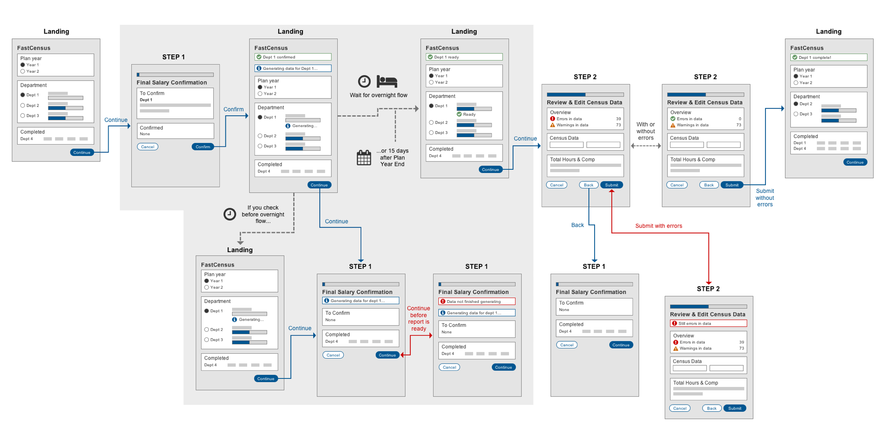
Iteration 3
While the report for a department is generating during the overnight flow, we also removed the ability for a user to enter the process for that department. This simplified the interaction and reduced the need to create additional messages and errors.
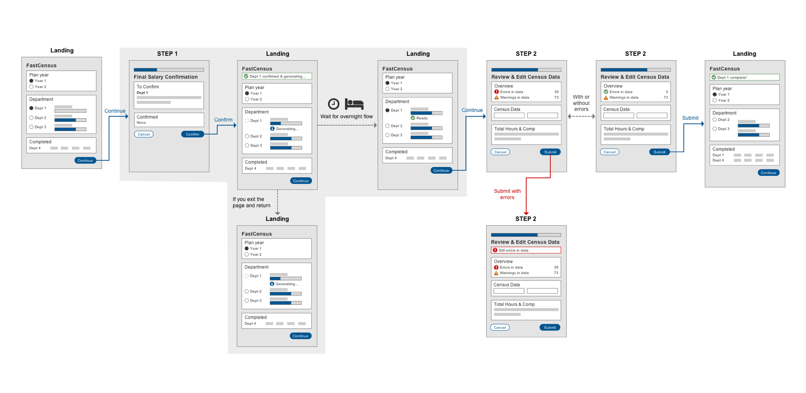
Ideal interaction without the overnight flow
Though ultimately dependent on technical capabilities, we proposed that ideally the reports are generated on the fly (not in an overnight flow), so that the user would not have to start the process, stop and wait overnight, and then return to complete it.
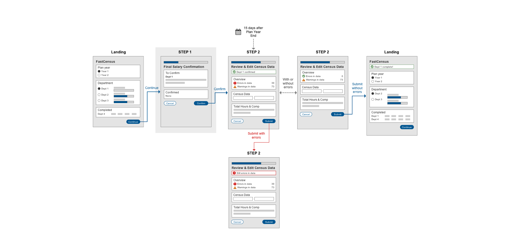
High-fidelity designs for employers
We created updated designs according to the current site standards for the plan sponsor (employer) website.
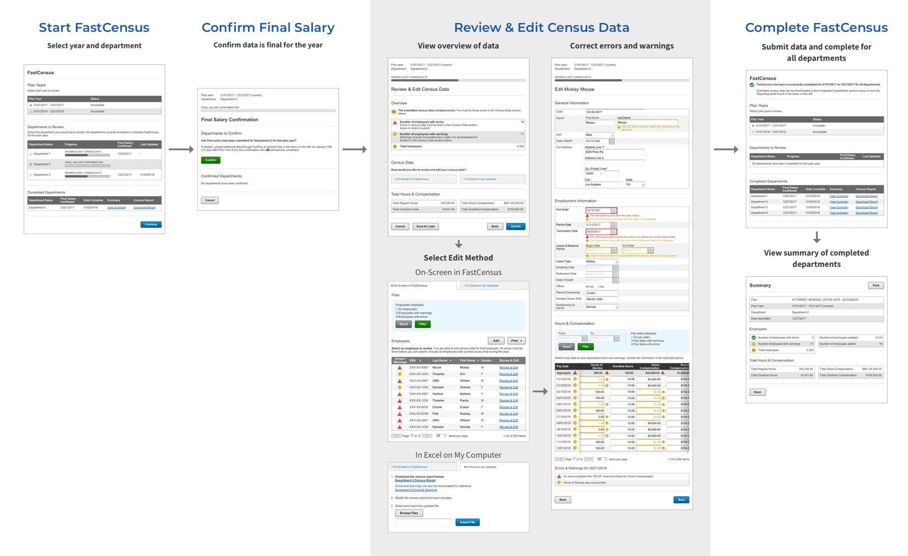
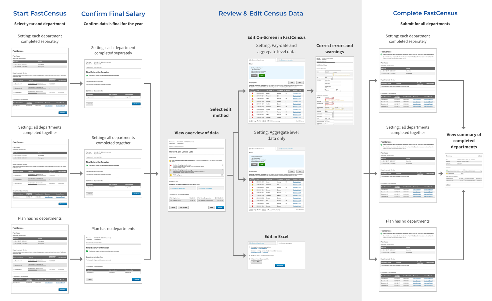
High-fidelity design for internal associates and administrators
The same process also needed to be available for internal Nationwide associates and administrators to provide support, so we created high-fidelity designs according to the administration site's standards as well.
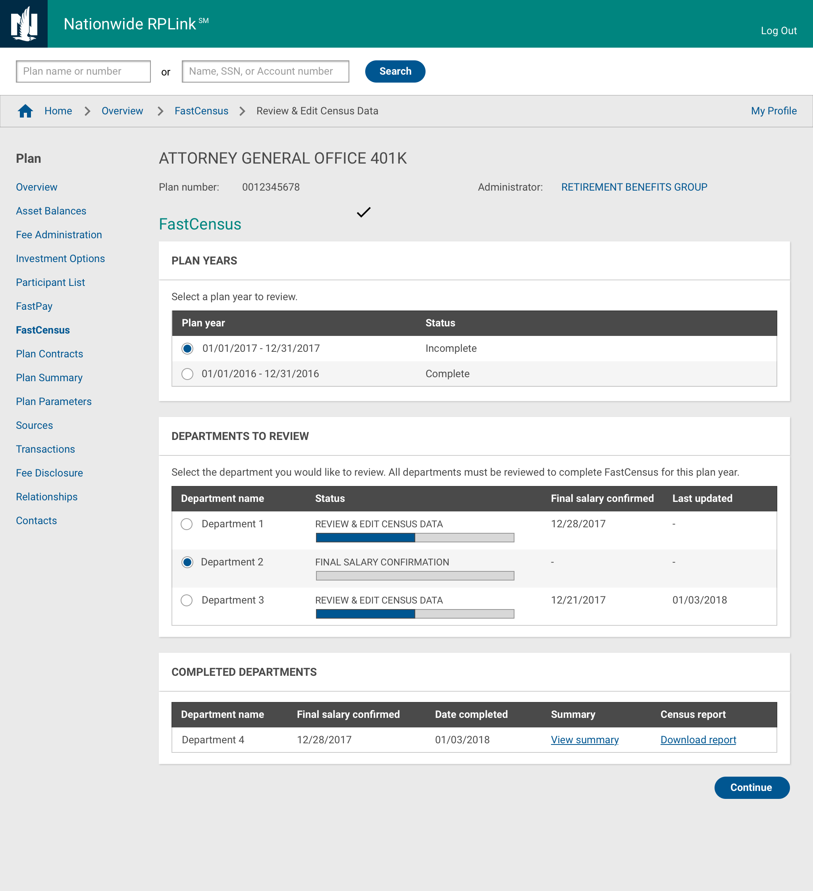
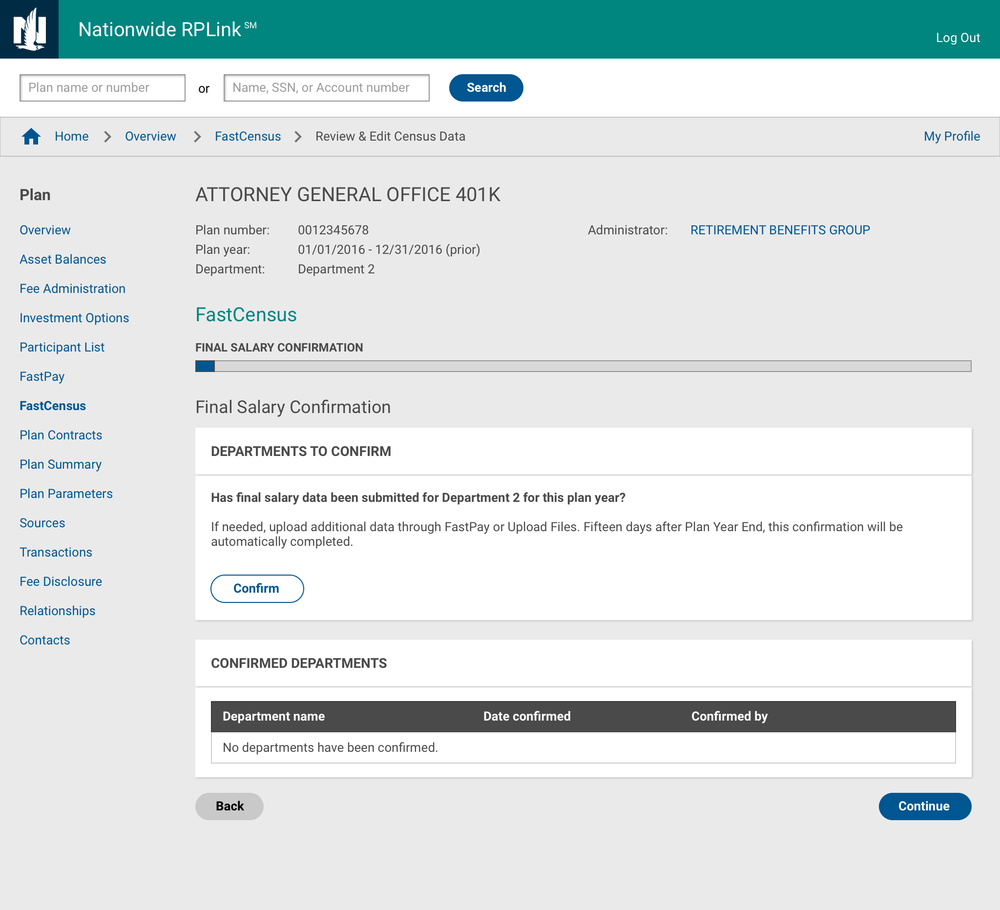
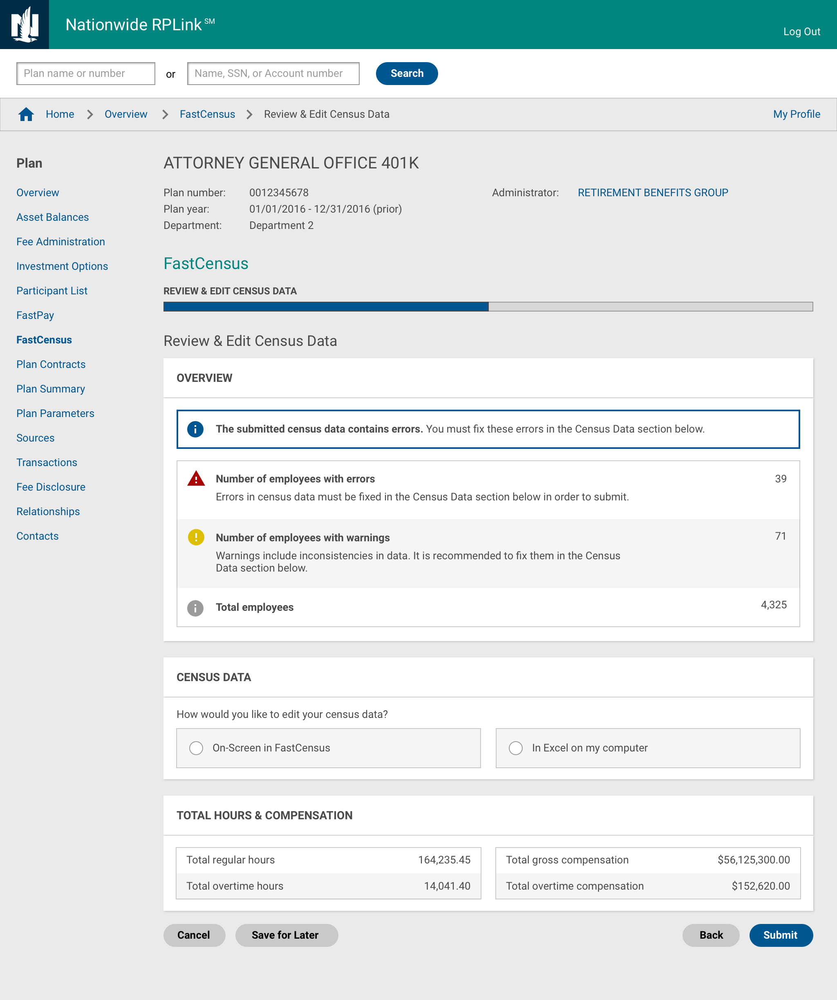
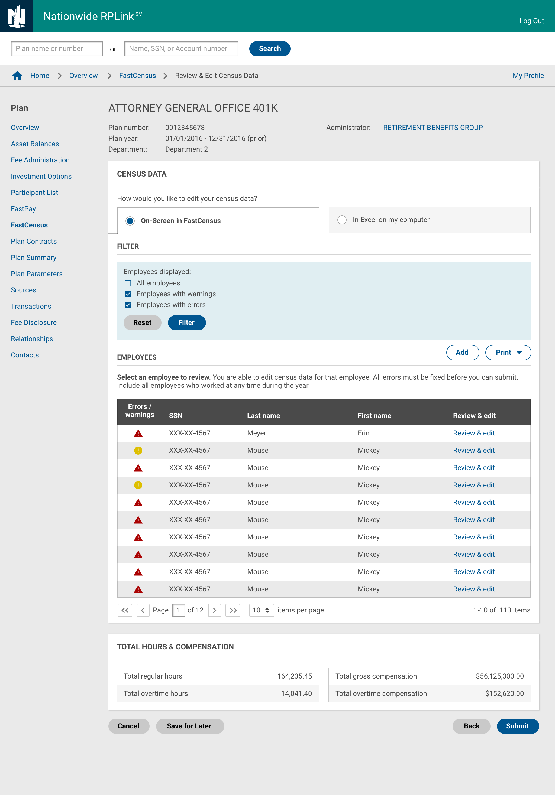
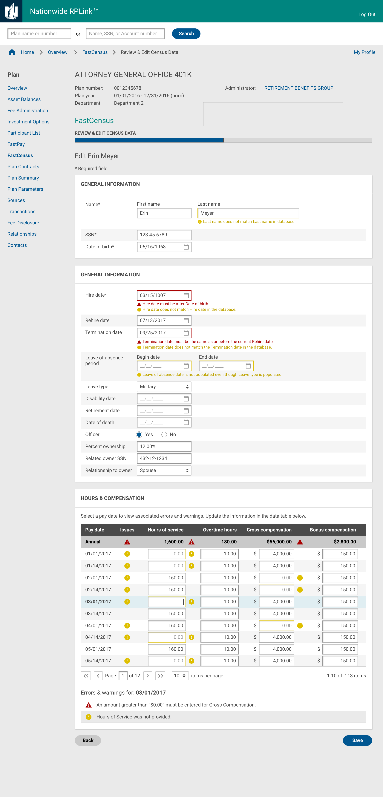
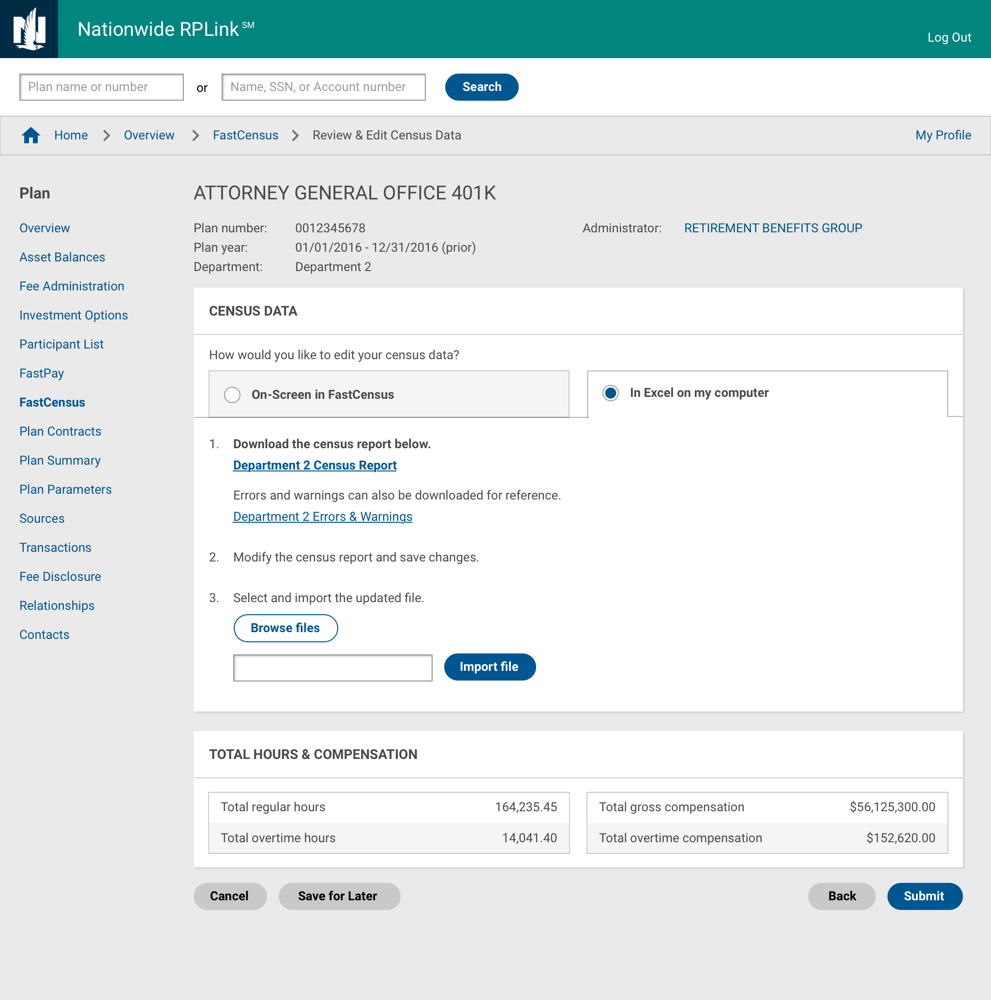
Ongoing Development
Additional nuances and scenarios continue to be found
Currently, this project is in development with many different developers working on it. I support them by providing explanations for the designs I have created and facilitating discussions on additional scenarios and nuances that are discovered along the way.
Learnings
Spend more time earlier getting feedback and understanding user needs
I think this design process could have been smoother if I spent more time planning and gaining a better understanding of nuances early on. For example, after creating the flow diagram, I could have spent more time reviewing it first with business as well as the design team to discover alternate cases and scenarios. This would have reduced time spent focusing in particular directions and backtracking.
Ideally, we also would have had an opportunity to conduct more rigorous research to better understand user needs. This would be able to give more conclusive information to base design decisions in addition to the opinions of different stakeholders.
Reflection
Balancing stakeholder needs and user experience
This project highlighted the importance of aligning multiple stakeholder perspectives—administrators focused on error visibility, support reps concerned about overwhelming employers—while designing for complex, multi-role workflows. Iterative user testing with 6 users across roles was critical to uncovering these tensions and iterating toward a solution that addressed both accuracy and usability.